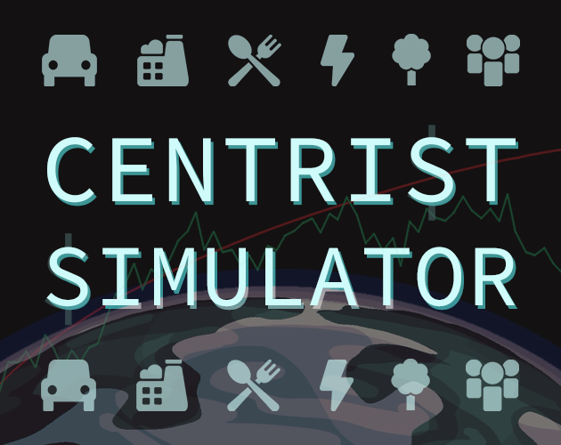

Description
Can you save humanity from itself by idling? This innovative minigame puts a twist on the genre by introducing an element of competition: if you want any hope for a future, you'll have to out-race the damages of the climate crisis. Winning will require all your management skills and out-of-the-box thinking, so be a smart investor and build the right portfolio to survive the most dangerous century of the history of mankind!
History
Developped as part of the Fuck Capitalism Jam 2024, in which it ranked 2nd.
This game is the result of an exploration around the themes of "status-quo bias", "compassion fade" and "identifiable victim bias". It is impossible to win if the player remains in normal difficulty, but victory is almost guaranteed if the player choses "impossible" mode and accepts to dismantle the existing structures of oppression.
Features
- An innovative take on the idle game genre that pitches you against the clock.
- 29 distinct technologies spanning 6 tech trees directly inspired by cutting-edge centrist solutions to the climate crisis, for a truly customizable and realistic centrist experience!
- A sophisticated narrative engine that generates a full life and personality for every human on your planet.
- For the first time in my games, a clear actual happy-end victory condition with a twist, including a secret ending where nobody dies!
- 5 unique levels of difficulty.
- Native mobile support.
- Quick to play (5-10 min), long to forget.
- Accessibility options such as "Confirmation Bias" or "Normalize status-quo" for the most faint of heart of centrists.
Videos
There are currently no trailers available for Centrist Simulator. Check back later for more or contact us for specific requests!
Images
screenshots
.png)
.png)
{kind=link}
{kind=link}
{kind=link}
{kind=link}
Logo & Icon
{kind=link}
Widgets
Selected Articles
-
Overall, I love how much it forces the player to become numb to death, (...) and how insurmountably difficult it *seems* (within an economic context.) Truly fantastic game, so detailed, so simple, so perfectly executed, down to the tiniest detail.
Stefems, Itch -
Very polished feel with a fresh take on the idle game... Where the game itself is a reflection on our idle behavior towards climate change. Really smart way to use game mechanics to engage with the issues the game brings up.
Bucketbomb, itch -
Without spoiling exactly how it DOES work and how you can win and save mankind, when I discovered that one, I fully realised this was a 6/5 for me, personally. Genius, especially because there is additional messaging to how the solution might seem to a proper centrist.
AbNormalHumanBeing, itch -
Just when I thought I had gotten through all the metacommentary of this game, I opened the settings to see "Confirmation Bias" and "Normalize Status Quo." Beyond being a great commentary, this game is absolutely hilarious.
rubberducke, itch
Additional Links
- Postmortem / intent statement
- A little writeup/essay/analysis/behind the scene/intent note on my personal website. yo252yo.wordpress.com.
- Game jam entry
- itch.io.
About Yo252Yo
- Boilerplate
- My name is Yoann, I go by “yo252yo“. I'm a transmedia author, meaning I do all kind of things at the junction of contemporary art, philosophy, academia, technology and pop culture. This presskit contains all the major videogames I've produced, with spoilers for press :)
- More information
- More information on Yo252Yo, our logo & relevant media are available here.
Centrist Simulator Credits
- Yo252Yo
- Game design/writing/programming
- Olivia Haselow
- Art/visual design
- Chris Ramusiewcz (Oselka Sound)
- Music